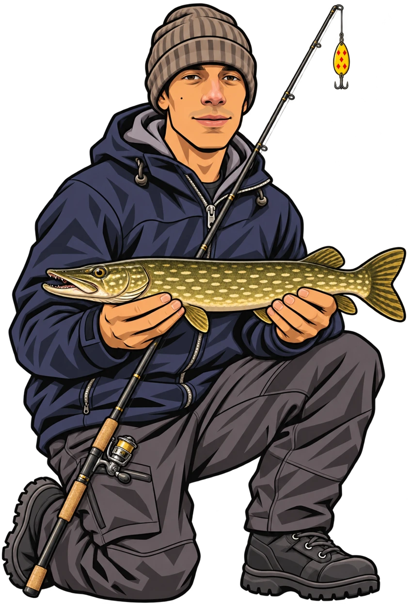

About Bryan Prokuski
Bryan fishes Minnesota year-round. In summer, he takes his kayak out for Mississippi River smallmouth. In winter, he puts a camera below the ice so you can see how pike, walleye and perch approach the lure.

See what the underwater camera picks up in Bryan’s fishing videos, or follow along with his ice fishing field notes.